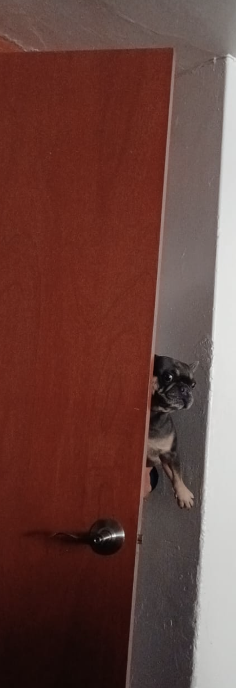
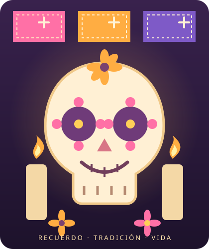

Noche de sustos y cempasúchil · 31 de octubre
Una visita inesperada
Entre calabazas encendidas, disfraces y flores de cempasúchil, la Catrina sale a celebrar. ¿Te animas a pedir ¡dulce o truco! y escuchar una calaverita?
La Catrina, muy coqueta,
llegó anoche al salón;
buscaba una calaverita
que alegrara el corazón.
Al mirar tantas flores
y un pan recién horneado,
bailó entre los colores
¡y se quedó otro rato!
Moraleja: con música y tradición,
hasta la muerte celebra esta ocasión.
🎃 🦇 🎃
Calaverita original · ¡Personaliza los versos con tus propias ideas!

